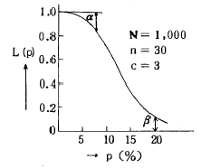
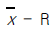
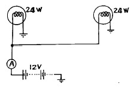

자동차정비기능장 (2003-03-30 기출문제)
1과목: 임의구분
1. 희박한 혼합비가 기관에 미치는 영향은?
- 기동이 쉽다.
- 동력(출력)의 감소를 가져온다.
- 연소속도가 빠르다.
- 저속 및 공전이 쉽다.
(정답률: 89%)

2. 디젤기관의 연소기간 중 노크와 가장 밀접한 관련이 있는 기간은?
- 착화지연기간
- 급격연소기간
- 제어연소기간
- 후연소기간
(정답률: 81%)
3. 디젤기관에서 연료분사 펌프의 조속기가 하는 작용은?
- 착화성을 조정한다.
- 분사 압력을 조정한다.
- 분사량을 조정한다.
- 분사시기를 조정한다.
(정답률: 74%)
4. 알루미늄으로 제작된 실린더헤드가 균열이 생겼다면 다음중 어떤 용접이 가장 적당한가?
- 전기피복 아크용접
- 불활성 가스 아크용접
- 산소-아세틸렌가스 용접
- LPG 용접
(정답률: 82%)
5. 1기통의 배기량이 416cc, 연소실 체적은 52cc인 기관의 압축비는?
- 7
- 8
- 9
- 10
(정답률: 49%)
6. 4행정 사이클 기관에서 행정체적이 5000cm3, 회전수 2000rpm, 도시평균 유효압력 9.5kgf/cm2인 경우 제동마력은 몇 PS 인가? (단, 기계효율은 82%이다.)
- 84.56
- 86.56
- 88.56
- 1⑤.56
(정답률: 42%)
7. 다음 중 압축비가 가장 높은 기관은?
- 디젤기관
- 소구기관
- 가솔린기관
- 헷셀만기관
(정답률: 80%)
8. 다음 중 파라핀계 연료인 것은?
- 메탄(CH4)
- 시클로 헥산(C6H12)
- 벤젠(C6H6)
- 헥사디엔(C6H10)
(정답률: 54%)
9. 핫 필름 타입(Hot Film Type)의 에어 플로우 센서에 대한 특징을 설명한 것중 맞는 것은?
- 세라믹 기판을 층저항으로 집적시켰다.
- 자기 청정기능의 열선이 있다.
- 백금선을 사용한다.
- 와류에 의한 주파수를 검출하여 공기량을 측정한다.
(정답률: 49%)
10. 혼합기가 흡기 다기관으로 분배되어 공급되는 형식의 기관에서 각각의 실린더 안으로 유입되는 혼합기의 공연비 차를 발생시키는 주 원인은?
- 공연비가 지나치게 크므로
- 공기의 공급이 부족하므로
- 기화되지 않은 연료입자가 굴곡면 등에 부착되어서
- 흡기 다기관의 온도가 높아 밀도의 감소로 인한 산소의 부족 때문에
(정답률: 49%)
11. 2행정 싸이클 단기통 기관이 2000rpm으로 회전한다. 행정체적이 1500cc, 흡입 때 신기 비중량은 1.15kg/m3이고, 체적효율이 70%라면 흡기용량은 몇 kg/sec인가?
- 0.04
- 0.⑤
- 0.07
- 0.09
(정답률: 27%)
12. 자동차의 배출가스 중에서 공해 방지를 위한 감소대상 물질이 아닌 것은?
- N2
- HC
- CO
- NOx
(정답률: 83%)
13. 기관 실린더 벽의 유막이 끊어져 피스톤이나 실린더 벽에 상처를 일으키는 현상을 무엇이라고 하는가?
- 플러터(flutter)현상
- 스틱(stick)현상
- 프리 이그니션(preignition)현상
- 스커프(scuf)현상
(정답률: 63%)
14. 전자제어 연료분사장치 기관에서 흡입되는 공기유량을 검출하는 방식으로 맞지 않는 것은?
- 베인식 에어플로우미터
- 공기유량 열량식 미터
- 칼만와류식 에어플로우미터
- 열선식 에어플로우미터
(정답률: 55%)
15. 4기통 기관의 점화순서를 실린더 배열순서로 하지 않는 이유 중 틀린 것은?
- 기관의 발생 동력을 크게 한다.
- 기관의 발생 동력을 균등하게 한다.
- 크랭크축 회전에 무리가 없도록 한다.
- 원활한 회전력을 발생한다.
(정답률: 55%)
16. 전자제어차량에서 기관의 전자제어 컨트롤유닛(ECU 또는 ECM)에 입력되는 신호가 아닌 것은?
- 스로틀밸브 열림위치
- 1번실린더 상사점 위치
- 배출되는 가스의 산소농도
- 연료 인젝터 가동시간
(정답률: 52%)
17. 인탱크형(intank type) 연료펌프에서 연료의 압력이 규정 이상되면 밸브가 열려 회로내의 압력상승을 제한하는 가장 대표적인 압력제어 밸브는?
- 니들밸브
- 첵밸브
- 셔틀밸브
- 릴리프밸브
(정답률: 66%)
18. 자동차 운행 중 냉각수온도가 비정상적으로 높게 올라갔을 경우에 발생 가능한 고장원인과 거리가 먼 것은?
- 냉각수량이 부족하다.
- 서머스탯이 불량하다.
- 냉각수펌프의 구동벨트가 헐거웁다.
- 피스톤의 압축링이 심하게 마모되었다.
(정답률: 75%)
19. 그림의 OC곡선을 보고 가장 올바른 내용을 나타낸 것은?

- α : 소비자 위험
- L(p) : 로트의 합격확률
- β : 생산자 위험
- 불량율 : 0.03
(정답률: 70%)
20. 품질관리 활동의 초기단계에서 가장 큰 비율로 들어가는 코스트는?
- 평가코스트
- 실패코스트
- 예방코스트
- 검사코스트
(정답률: 58%)
2과목: 임의구분
21. PERT/CPM에서 Network 작도시 碇은 무엇을 나타내는가?
- 단계(event)
- 명목상의 활동(dummy activity)
- 병행활동(paralleled activity)
- 최초단계(initial event)
(정답률: 48%)
22. 신제품에 가장 적합한 수요예측 방법은?
- 시계열분석
- 의견분석
- 최소자승법
- 지수평활법
(정답률: 34%)
23. 관리도에 대한 설명 내용으로 가장 관계가 먼 것은?
- 관리도는 공정의 관리만이 아니라 공정의 해석에도 이용된다.
- 관리도는 과거의 데이터의 해석에도 이용된다.
- 관리도는 표준화가 불가능한 공정에는 사용할 수 없다.
- 계량치인 경우에는

관리도가 일반적으로 이용된다.
(정답률: 54%)
24. 다음은 워크 샘플링에 대한 설명이다. 틀린 것은?
- 관측대상의 작업을 모집단으로 하고 임의의 시점에서 작업내용을 샘플로 한다.
- 업무나 활동의 비율을 알 수 있다.
- 기초이론은 확률이다.
- 한 사람의 관측자가 1인 또는 1대의 기계만을 측정한다.
(정답률: 71%)
25. 동력 조향장치가 고장났을때 수동조작을 원활히 할 수 있도록 제어밸브 하우징에 설치되어 있는 것은?
- 릴리프 밸브
- 안전 체크 밸브
- 제어 밸브
- 동력 실린더
(정답률: 55%)
26. 수동변속기에서 싱크로메시 기구가 작용하는 시기는 어느것인가?
- 변속기어가 풀릴 때
- 변속기어가 물릴 때
- 클러치 페달을 놓을 때
- 클러치 페달을 밟을 때
(정답률: 84%)
27. 레이디얼 타이어의 장점이 아닌 것은?
- 선회시 옆미끄럼이 적다.
- 내마모성이 우수하다.
- 구름저항이 적다.
- 고속주행시 안전성이 저하된다.
(정답률: 94%)
28. 구동바퀴의 구동력을 크게 하려면?
- 축의 회전력을 작게 한다.
- 구동바퀴의 반지름을 작게 한다.
- 구동바퀴의 반지름을 크게한다.
- 접지면이 작은 타이어를 사용한다.
(정답률: 54%)
29. 토인에 대한 설명 중 가장 적당치 않은 것은?
- 토인은 앞바퀴의 조향을 쉽게 하기 위하여 둔다.
- 토인의 조정이 불량하면 타이어가 편마모 된다.
- 토인은 캠버와 함께 타이어의 직진성을 유도한다.
- 토인은 타이로드의 길이로 조정한다.
(정답률: 67%)
30. 주행속도 90Km/h의 자동차에 브레이크를 작용 시켰을때 정지거리는 얼마인가?(단, 차륜과 도로면의 마찰계수는 0.2이다.)
- 45m
- 90m
- 159m
- 180m
(정답률: 49%)
31. 기관회전수 4000rpm, 총감속비 5, 타이어 유효지름이 60cm일때 주행속도는?
- 90.5 km/h
- 95.5 km/h
- 100.5 km/h
- 1⑤.5 km/h
(정답률: 17%)
32. 브레이크 페달을 놓았을 때 하이드로백 릴레이 밸브의 작용에 대하여 맞는 것은?
- 공기 밸브가 먼저 닫힌 다음 진공 밸브가 열림
- 공기 밸브가 먼저 열린 다음 진공 밸브가 닫힘
- 진공 밸브가 먼저 닫힌 다음 공기 밸브가 열림
- 진공 밸브가 먼저 열린 다음 공기 밸브가 닫힘
(정답률: 60%)
33. 브레이크 페달이 점점 딱딱해져서 주행불능 상태가 되었을 때는 어떤 고장인가?
- 마스터 실린더 피스톤 캡의 고장이다.
- 브레이크 오일의 량이 적어졌다.
- 슈 리턴스프링의 장력이 강력해졌다.
- 마스터 실린더 바이패스 포트가 막혔다.
(정답률: 73%)
34. 일체식 구동륜 뒤 차축은 구동 축의 지지방식으로 구분된다. 그 형식이 아닌 것은?
- 전부동식
- 3/4 부동식
- 반부동식
- 1/4 부동식
(정답률: 57%)
35. 현가장치에서 스프링이 갖추어야 할 조건 중 틀린 것은?
- 자유고의 변화가 적어야 한다.
- 설치공간을 적게 차지해야 한다.
- 장력의 변화가 적어야 한다.
- 적차 또는 공차상태에서 차체의 최저 지상고 변화가 많아야 한다.
(정답률: 90%)
36. 축거가 2.5m인 자동차가 주행 중 선회시 바깥바퀴의 조향각이 30° 안쪽바퀴의 조향각이 35° 이다. 최소 회전반경은 몇 m 인가?(단, 킹핀중심과 바퀴의 접지면 중심간거리는 15cm이다.)
- 4.36
- 4.51
- 5.01
- 5.15
(정답률: 47%)
37. 자동변속기의 고장점검을 위하여 "D"위치에서 스톨테스트를 실시한 결과 스톨 스피드가 규정보다 낮다. 이때의 결함 원인으로 가장 적절한 설명은?
- 라인 압력이 너무 낮다.
- 엔진출력이 부족하다.
- 클러치 및 브레이크가 미끄러진다.
- 오일량이 부적합하다.
(정답률: 75%)
38. 에어백 시스템에서 제어모듈의 주요 기능이 아닌 것은?
- 에어백 작동시(충돌시)의 축전지 고장에 대비한 비상 전원기능(전원용 충전 콘덴서)
- 축전지 전압저하에 대비한 전압상승 기능
- 안전성과 신뢰성 제고를 위한 자기진단 기능
- 충돌시 충돌에너지 측정기능
(정답률: 59%)
39. 드가르봉식 쇽업쇼바 특징이 아닌 것은?
- 내부압력이 있어 분해하는 것은 위험하다.
- 실린더가 하나로 되어 있어 방열효과가 좋다.
- 장기간 작동되어도 감쇠 효과가 저하되지 않는다.
- 구조가 복잡하다.
(정답률: 76%)
40. 공기식 브레이크 장치의 브레이크 밸브와 브레이크 챔버 사이에 설치되어 브레이크가 빠르고 확실하게 풀리도록 하는 것은?
- 공기 압축기
- 압력 조정기
- 퀵 릴리스 밸브
- 첵 및 안전 밸브
(정답률: 84%)
3과목: 임의구분
41. 미끄러운 노면에서 브레이크를 밟았을 때 타이어가 고착 (lock)되지 않도록 조정하는 장치를 무엇이라고 하는가?
- ECU
- TCU
- ABS
- ECS
(정답률: 86%)
42. 자동변속기에서 규정 차속 이상이 되면 펌프 임펠러와 터빈 런너를 기계적으로 직결시켜 미끄럼에 의한 손실을 없게하고 연비향상과 정숙성 향상을 도모하는 장치는?
- 킥다운 장치(kick down)
- 히스테리시스장치
- 펄스제네레이션장치
- 록업(Lock up)장치
(정답률: 69%)
43. 자동변속기용 토크 컨버터에 대한 설명 중 틀린 것은?
- 임펠러는 엔진의 크랭크축에 의해 구동된다.
- 터빈이 공전을 시작하는 점을 클러치 포인트라고 한다.
- 스테이터는 오일흐름 방향을 바꿔 토크의 증대를 도모한다.
- 토크비는 속도비가 제로(0)일 때 최대이다.
(정답률: 32%)
44. 자속밀도 0.8Wb/m2의 평균자속 내에 길이 0.5m의 도체를 직각으로 두고 이것을 30m/s의 속도로 운동시키면 이도체에는 몇 V의 기전력이 발생하겠는가?
- 8
- 12
- 16
- 18
(정답률: 37%)
45. 냉방장치에 사용되는 팽창밸브의 역활로 적당하지 않은 것은?
- 냉매량 조절
- 에바페레이터 온도감지
- 기체상태의 냉매를 액체화
- 실내온도 조절
(정답률: 46%)
46. 그림과 같이 12V의 축전지에 24W의 전구 2개를 접속하였을때 꿩에 흐르는 전류는?

- 2A
- 3A
- 4A
- 6A
(정답률: 63%)
47. 점화시기가 너무 늦을 때 일어나는 현상이 아닌 것은?
- 엔진에 노킹현상이 일어난다.
- 연료 소비량이 증대한다.
- 엔진이 과다하게 과열된다.
- 배기가스 통로에 다량의 카본이 퇴적된다.
(정답률: 41%)
48. 타원체형(ellipsoid form) 전조등과 포물선형(paraboloid form) 전조등을 비교할 때 타원체형 전조등의 특징이 아닌 것은?
- 크기가 작다.
- 멀리까지 조명할 수 있다.
- 노면에 대한 광분포가 불균일하다.
- 효율이 높다.
(정답률: 71%)
49. 시동모터의 피니언 기어 잇수가 9개, 링기어 잇수가 114개 일때 엔진구동에 필요한 토크가 6kgf-m 이면 시동모터에 필요한 토크는 몇 kgf-m 인가?
- 0.53
- 0.47
- 76
- 74.3
(정답률: 43%)
50. AC 발전기의 특징을 설명한 것 중 틀린 것은?
- 브러시에는 계자전류가 흐르기 때문에 불꽃발생이 많다.
- 속도변화에 따른 적응범위가 넓다.
- 브러시의 수명이 길다.
- 컷아웃 릴레이가 필요없다.
(정답률: 60%)
51. 5A의 일정한 전류로 20시간 방전을 계속할 수 있는 축전지의 용량을 표시하면?
- 45AH
- 55AH
- 100AH
- 150AH
(정답률: 68%)
52. 축전지 내부에서 일어나는 화학반응에서 방전할 때 양극과 음극은 무엇으로 되는가?
- PbO2
- H2SO4
- PbSO4
- H2O
(정답률: 65%)
53. 프레임의 점검 수정작업 중 틀린 것은?
- 균열은 발생되면 커지므로 상태를 살핀 후 수리방법 판단
- 프레임게이지, 센터링게이지, 레이저 광선에 의한 측정
- 균열은 보강판을 대기전에 균열 양끝 부분에 약 5mm정도 크랙 스톱홀을 만든다.
- 보강판 끝 부분을 점용접하는 것은 위험하다.
(정답률: 60%)
54. 자동차용 합성수지의 특징이 아닌 것은?
- 고온에서 열 변형이 없다.
- 내식성, 방습성이 우수하다.
- 비중이 0.9 ‾ 1.3 정도로 가볍다.
- 복잡한 형상의 성형성이 우수하다.
(정답률: 59%)
55. 전면 충돌 등의 강한 충격을 받을 경우 멤버 자체가 변하여 객실에 영향이 적게 하도록 굴곡을 두는 것을 무엇이라 하는가?
- 비딩
- 스토퍼
- 마운트
- 킥업
(정답률: 70%)
56. 손상 패널의 수리 방법을 결정할 때 분석의 내용이 아닌것은?
- 충돌의 각도
- 충돌물의 중량 및 강도
- 충돌물의 속도
- 파손된 강판의 크기
(정답률: 30%)
57. 기본적으로 도료를 구성하는 3가지 요소가 아닌 것은?
- 수지(樹脂)
- 광택(光澤)
- 안료(顔料)
- 용제(溶劑)
(정답률: 74%)
58. 메탈릭 칼라 조색시 밝게 해주려면 첨가해야 하는 것은?
- 흰색
- 파랑
- 알루미늄 조색제
- 노랑
(정답률: 72%)
59. 자동차 보수도장의 연마 장비 및 공구에 해당되지 않는 것은?
- 도료 교반기(agiyator)
- 더블액션 샌더(doble action sander)
- 오비탈 샌더(orbital sander)
- 핸드파일(hand file)
(정답률: 59%)
60. 하절기에 크리어층의 표면에 바늘구멍과 같은 핀홀현상이 발생한다. 이에 대한 설명으로 옳지 않은 것은?
- 베이스 도료에 락카희석제를 사용하면 건조가 느리게 되므로 발생한다.
- 베이스 도장 후 후레쉬 타임의 시간이 짧은 상태에서 크리어를 도장했을 경우 발생한다.
- 외부의 온도가 높아 크리어 표면이 먼저 경화되면서 내부의 용제가 뚫고 올라와 발생한다.
- 베이스의 도막이 두꺼워 용제증발이 느려 발생되고, 특히 어두운 색상에서 잘 발생한다.
(정답률: 29%)